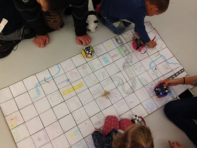

Tableros y fichas
Estos son algunos ejemplos, el material completo y actualizado lo puedes consultar en la sección tableros y recursos de mi página web.
Estamos realizando un recopilatorio con actividades a través de este formulario
Puedes consultar las aportaciones actuales aquí
Tableros
Tableros con actividades
Recopilatorio con tableros y actividades en el repositorio oficial escornabot realizado por Jorge Lobo
Tablero del Sistema Solar
Lo tienes explicado por Jorge Lobo en su blog El Sistema Solar

Tablero casillas blancas y oficial escornabot
El tablero con casillas blancas es muy interesante si le ponemos bolsas tipo zip cortadas en cada casilla y las utilizamos para meter tarjetas personalizadas.
Tienes en la parte inferior las tarjetas con recorridos, recortadas van eligiendo al azar un recorrido.
| Tablero A-3 | Archivo SVG | Archivo PDF |
|---|---|---|
 |
Plantilla cuadrados formato .SVG | Plantilla cuadrados formato .PDF |
 |
Tablero folleto formato .SVG | Tablero folleto formato .PDF |
Tablero números
Puedes jugar tirando un dado y que busquen la casilla, realizando sumas simples... Edita el tablero para complicarlo.
Otro juego divertido son las carreras. Es para dos personas, cada uno con un escornabot y fuera del tablero. Se lanza un dado, como los números se repiten el objetivo es que alcancen la primera casilla que vean.
| Tablero A-3 | Archivo SVG | Archivo PDF |
|---|---|---|
 |
Tablero Números formato .SVG | Tablero Números formato .PDF |
Tablero condicional
Se debe llegar desde la casilla inferior izquierda con el triángulo verde hasta la casilla inferior derecha cumpliendo las condiciones de las casillas. La casilla con el aspa roja no se puede pisar, del mismo modo que la azul ya que se caería al agua.
| Tablero A-3 | Archivo SVG | Archivo PDF |
|---|---|---|
 |
Tablero condicional formato .SVG | Tablero condicional formato .PDF |
Tablero figuras geométricas
Se pueden recortar las figuras interiores o cambiar de color para que l@s peques primero hagan la composición del tablero, luego juegan combinando colores y formas geométricas. Puedes crear dos dados, uno contiene colores y otro las formas geométricas.
| Tablero A-3 | Archivo SVG | Archivo PDF |
|---|---|---|
 |
Tablero-Cuadrado-Triangulo-Circulo.svg | Tablero-Cuadrado-Triangulo-Circulo.pdf |
Tableros alfabeto
Para trabajar las letras con animalicos :)
| Tablero A-3 | Archivo SVG | Archivo PDF |
|---|---|---|
 |
tablero-alfabeto-a-i.svg | tablero-alfabeto-a-i.pdf |
 |
tablero-alfabeto-j-q.svg | tablero-alfabeto-j-q.pdf |
 |
tablero-alfabeto-r-z.svg | tablero-alfabeto-r-z.pdf |
Tablero triangular
Para usar la plantilla triangular debes cambiar la programación para que los grados en los giros se adapten al dibujo, el robot debe ir por las líneas y llegar a los vértices de los triángulos.
| Tablero A-3 | Archivo SVG | Archivo PDF |
|---|---|---|
 |
Plantilla triangular formato .SVG | Plantilla triangular formato .PDF |
Tablero con papel pintor
Hay que cortar en papel las cuadrículas por donde queremos que se mueva el robot, las pegaremos en papel de pintor y después pintarán un mapa por el que se desplazará Escornabot.

Fichas
| Tarjeta | Archivo |
|---|---|
 |
Tarjetas inicio-fin formato Word |
 |
Tarjetas recorridos formato .PDF |
 |
Tarjetas frutas formato Word |
 |
Tarjetas ecosistemas formato .PDF |

Escornabot, un robot gallego Open Source. La recopilación de material de este curso ha sido elaborada por Pablo Rubio Martínez bajo licencia Creative Commons Attribution-ShareAlike 4.0 International (CC BY-SA 4.0).